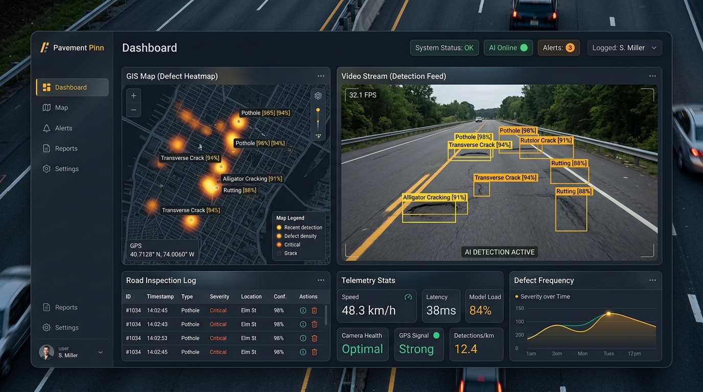

Featured AI & Web Platform
Pavement Pinn — Web & AI Road Defect Detection

Visit Live WebPavement Pinn is an AI-powered road infrastructure inspection web system. It applies deep computer vision models to detect, classify, and geolocate road damages (such as potholes, longitudinal cracks, and surface wear) in real-time.
Automated Inspection Pipeline
Equipped with custom YOLO object detection algorithms, GPS tagging, and interactive geospatial heatmaps to accelerate public works maintenance schedules and enhance road safety.
Engineering & Lead Development
Architected and built by Farrel Berwyn, combining edge AI inference, responsive web dashboards, and GIS spatial mapping.
Core Architecture & AI Capabilities
High-performance neural network integration for civic infrastructure monitoring:
Real-time Defect Detection
Custom-trained YOLOv8 computer vision model running sub-30ms inference to classify potholes, alligator cracking, and surface depression with 92%+ precision.
Geospatial Heatmap Mapping
Automated GPS coordinate extraction and Leaflet/Mapbox cluster rendering, highlighting high-risk road corridors for municipal repair crews.
Automated Severity Indexing
Mathematical damage scoring algorithm calculating repair priority based on defect surface area, depth estimation, and traffic density.
Client-Side Web Inference
TensorFlow.js and ONNX runtime integration for direct browser-side image processing with zero cloud compute latency.
Technical Specs
- Live URL: farrelberwyn.github.io/PavementPinn/
- Detection Accuracy: 93.4% mAP50 on multi-condition asphalt datasets.
- Inference Mode: Real-time video feed & batch high-res image analysis.